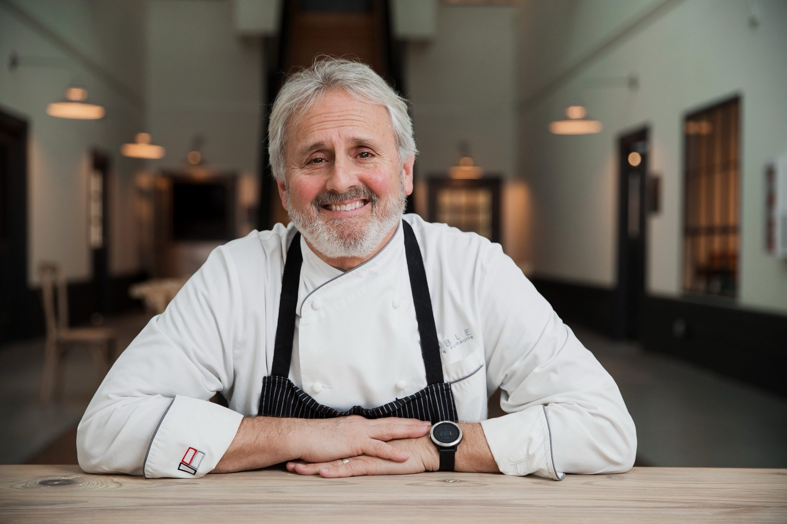
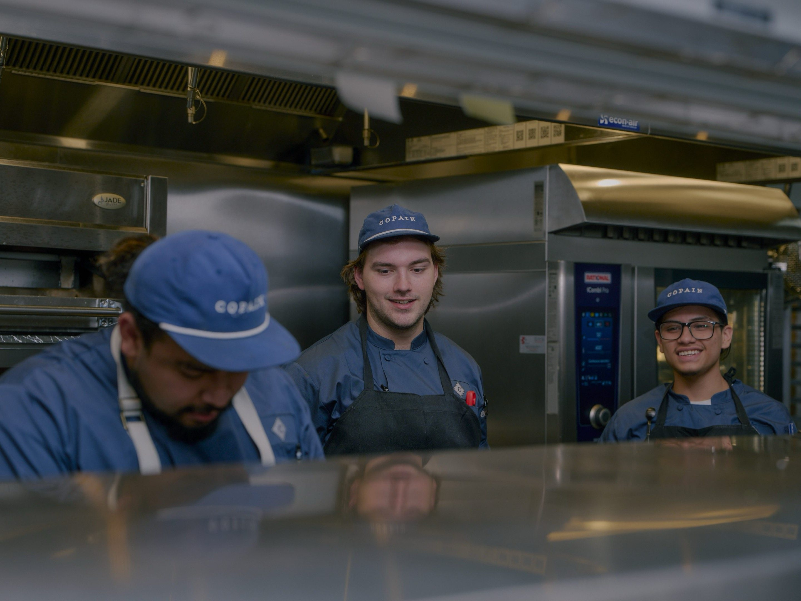

Our Story
Notre Pain
Quotidien
Our Daily Bread

Built on the Belief
That Bread Matters
Copain began with a simple conviction: that a city deserves a real boulangerie — one where the croissants are laminated by hand, the baguettes are long-fermented and stone-deck baked, and the case is full by seven in the morning because the bakers never stopped working through the night.
The name copain is French for companion — someone you break bread with. Every detail of what we do is rooted in that idea. We bake for people. For the regulars who come in before work, for the families who make Saturday mornings a ritual, for the tables at Ballantyne that linger over a second glass of wine.
"Bread is the most fundamental act of generosity — you give it to everyone at the table, without reservation."

French Method.
Carolina Soul.
We follow traditional French boulangerie methods without compromise. Long fermentation develops flavor and digestibility. Stone deck ovens create the crust. Three-day lamination gives the croissants their structure. These aren't shortcuts we take — they're the reason we exist.
Our sourcing is local where possible: eggs from regional farms, produce from Carolina growers, and whenever we can, relationships with producers who care as much as we do about what they make.
Core Values
Live the Golden Rule
Treat every person who walks through our doors — guest or colleague — with the respect and care you'd want for yourself.
Create Healthy Growth
We grow intentionally — not for growth's sake, but to do what we do better and in more places that matter to us.
Honor Families
We are a place for family rituals — Saturday morning pastries, birthday cakes, holiday breads. We take that role seriously.
Give Generously
We donate, we volunteer, we support our community. Generosity is baked into the business — not bolted on.
Provide Restoration
Food at its best is restorative. A great meal, a quiet morning, a cup of coffee and a croissant — we create moments of genuine rest.
Add Value to Our Team
We invest in the people who build this place every day. Their craft, their growth, and their wellbeing matter as much as what's in the case.
Noble Food
& Pursuits
Copain is a member of the Noble Food & Pursuits family — a Charlotte-based hospitality group united by a commitment to craft, community, and generous hospitality. NF&P restaurants share values but each has its own identity and kitchen culture.
Work at Copain
We're always looking for passionate bakers, baristas, and hospitality professionals who believe in what we're building. Opportunities across all three locations.